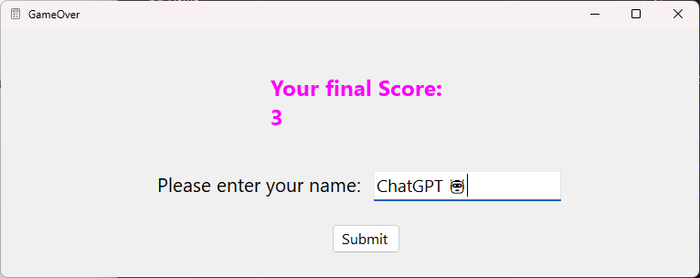
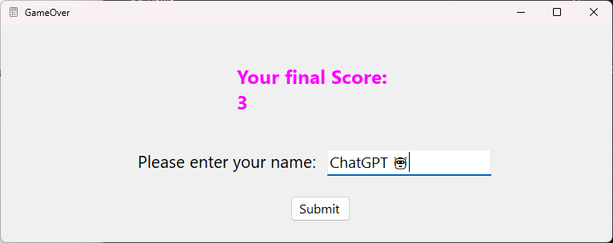

Project Requirements Analysis
For the course Requirements Analysis, I had to get together with a team to figure out what our customer wanted in his web application. The app was for a hockeyclub who wanted to move their administrative tasks from paper to a better platform.
PHP Website
During my second year, we needed to make a webapp using PHP Laravel. The project is still
ongoing, but is to be finished soon.
This project is made with a team of 6 people. We are making a website for a fictional
bikingclub. In the group, I have the role of Scrum Master. I make sure that the team is working
on the right things and that we are working efficiently. Of course, I also help with the pages
and code of the website.
Below is a screenshot of the website.
Math Game
For the course DevOps & Security, I created a small math game you can play. The game is made
with
Windows Forms C#. The game is extremely simple and you can play it yourself by downloading the
game
from my
Github.
(Beware of the Albert Einstein difficulty though, it's very hard! 🤯)
 

Automatic fish feeder
For the course IoT Essentials, I had to create an automatic fish feeder. The fish feeder was relatively advanced, as it had to be able to feed the fish at a certain time, as well as track some statistics like the water level. It had to be able to display these stats on an LCD connected to the Raspberry Pi. I had a ton of fun building this project and coding it to be able to do all these things. I also learned a lot about the Raspberry Pi and connecting devices to it.